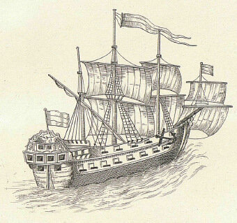
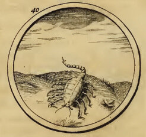
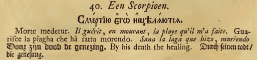
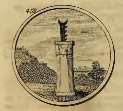
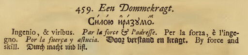
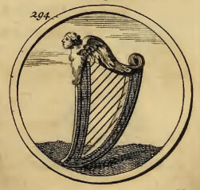
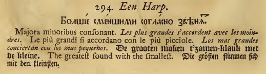

В отличие от кораблей многих других типов, построенных для Азовского флота, изображение так называемого «барбарского» корабля до нас дошло . Оно находится в отделе карт Библиотеки Академии наук в Санкт-Петербурге, в рукописном описании северо-восточной части Азовского моря, которое составлено поручиком Кристианом Отто, служившим старшим штурманом на корабле «Крепость» во время его плавания в Константинополь. Из этого делается заключение, что именно этот корабль изображен на рисунке.
С.Елагин полагает, что название «барбарский» или «варварийский», очевидно, применялось потому, что корабль строили по образцу судов Северной Африки (Тунис, Триполи, Алжир, Сула). Однако из дошедших до нас сведений о североафриканских кораблях видно, что ни один из них не соответствует кораблям Азовского флота России. Наиболее вероятный прототип, как считает Елагин, это турецкий карамусал. По его мнению, название это произошло от двух турецких слов Kara и Mursal, означающих вместе «черный посланник». Строили этот однодечный корабль из платанового дерева, и обычно окрашивали в черный цвет. Однако, более вероятно происхождение этого названия связано с судостроительной верфью Karamürsel, расположенной на южном берегу Измитского залива Мраморного моря, километрах в 60 от Стамбула. Именно на этой верфи впрвые были построены корабли этого типа. Вначале это были легкие узкие гребные суда длиной не более 13 м, но к XVI веку это уже достаточно крупные корабли, которые использовались для транспортных целей, в основном в прибрежных водах Черного и Средиземного морей. Так что не эти суда Петр, видимо, брал как прототип при постройке своих «барбарских» кораблей. Скорее всего за образец были взяты корабли североафриканских корсаров, которые действовали в рамках Турецкой империи в акватории Средиземного и Черного морей. Правда, турками экипажи этих кораблей являлись не по национальности, а, как писал испанец Д.Хаэдо, «по профессии». Так, в конце XVI века почти две трети корсарских капитанов Алжира составляли итальянцы, ирландцы, шотландцы, французы, датчане и выходцы из другие европейских стран. Да и в XVII веке, как пишет Ю.М. Ефремов, «много было в турецком флоте... офицеров из европейцев-ренегатов, бывших офицеров венецианского, французского, испанского флотов...»
Всего было заложено четырнадцать «барбарских» кораблей. причем восемь из них планировалось построить двухпалубными 44-пушечными, а четыре – с одной открытой батарей из 36 орудий. В ходе постройки вооружение некоторых из них было увеличено. После сдачи этих кораблей морякам они уже не упоминались как барбарские, называли их просто кораблями.
Продолжим список кораблей Азовского флота, начатый нами ранее и остановившийся на записи «Провиантские суда и баркалоны»:
53. Крѣпость (Замокъ, Кастелъ, Старгейтъ, Ситадель). (52) Біютъ мя, но и подкрѣпляютъ. Заложен в Паншине, в 1699 г. отправлен в Константинополь с послом Украинцевым.
54. Скорпіонъ (52) Заложен в Паншине. В 1699 г. ходил во главе эскадры въ Керчь.
В перечне кораблей у Елагина не указан девиз этого корабля, однако в переписке он встречается: Смертию его исцеляются. Вот как он выглядит в Амстердамском издании 1705 года:


55. Флагъ (52) Заложен в Паншине. В 1699 г. переведен из Паншина в Азов.
56. Звѣзда (Золотая звѣзда. Штарнъ.Дегоудестарнъ.) (52) (230) Господи покажи нам пути твоя. Заложен в Паншине. В 1699 г. переведен из Паншина в Азов.
Три из перечисленных выше барбарских кораблей были построены кумпанством «именитаго человѣка» Строганова, а один – кумпанством боярина Льва Кирилловича Нарышкина.
57. Думкрахтъ (44, двухдечный) Силою и разумомъ. Заложен на Ступинской верфи в 1697 г. (Гостиное кумпанство)


58. Струсъ (44, двухдечный) Сила сокрушаетъ крѣпость. Заложен на Ступинской верфи в 1697 г. (Гостиное кумпанство)
59. Камень (Штейнъ). (44, двухдечный) Надъ водами силу имѣетъ. Заложен на Ступинской верфи в 1697 г. (Гостиное кумпанство)
60. Слонъ (Олифантъ). (44, двухдечный) Злымъ лихъ. Заложен на Ступинской верфи в 1697 г. (Гостиное кумпанство)
61. Рысь. (Луксъ) (44, двухдечный) Побѣда любитъ прилежаніе. Заложен на Ступинской верфи в 1697 г. (Гостиное кумпанство)
62. Журавль стрегущій. (44, двухдечный) (Кроанъ опвахтъ.) Что внезапу. Заложен на Ступинской верфи в 1697 г. (Гостиное кумпанство)
63. Соколъ. (Фалкь). (44, двухдечный) Собою безъ принужденія. Заложен на Ступинской верфи в 1697 г. (Гостиное кумпанство)
64. Собака (Трейгунъ). (44, двухдечный) Неробкая вѣрность. Заложен на Ступинской верфи в 1697 г. (Гостиное кумпанство)
65. Арфа. (36, однопалубный) Большіе съ меньшими согласны суть. Заложен на Ступинской верфи в 1697 г. (Гостиное кумпанство).


66. Гранат-аполъ (36, однопалубный). Богатство свое съ собою ношу. Заложен на Ступинской верфи в 1697 г. (Гостиное кумпанство).
Дальше нас ждут бомбардирские корабли или ших-бомбарды.